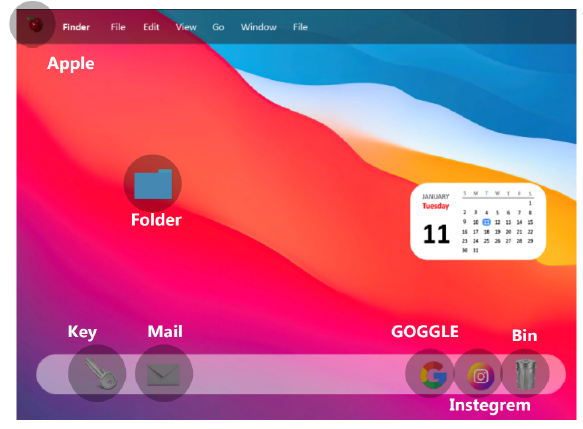
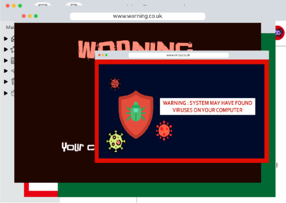
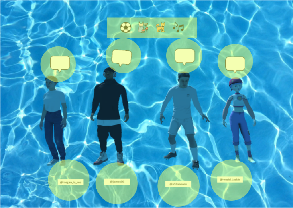
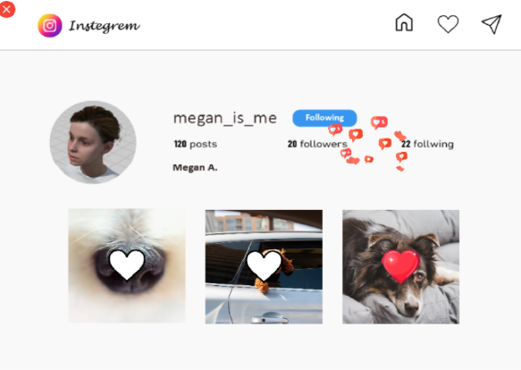
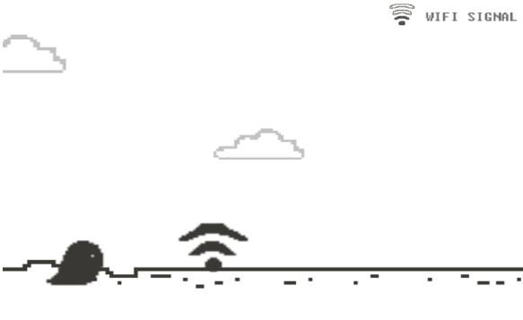
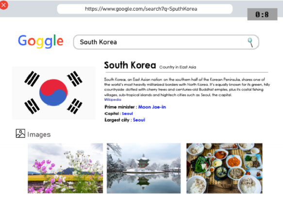
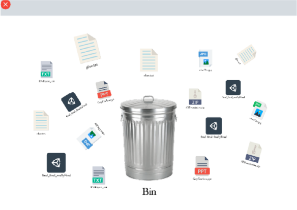
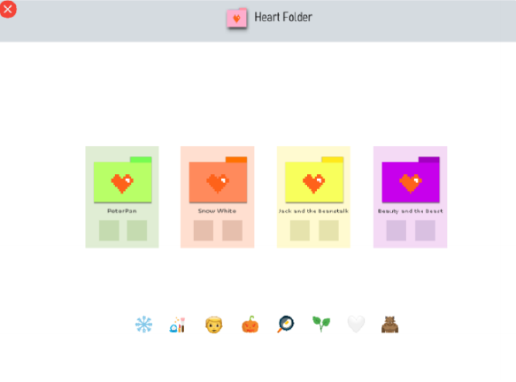
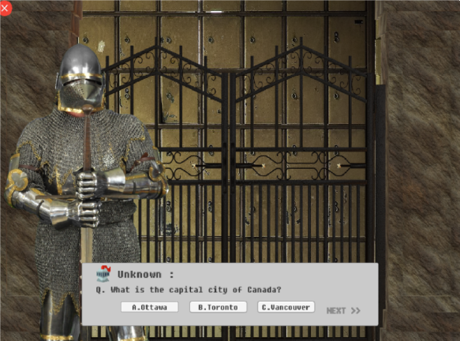

1. Main Scene
The Main Scene works like a computer home screen. Players can return here at any time and open other apps. UI buttons mimic real desktop apps: Apple, Folder, Key, Mail, Goggle, Instegrem, and Bin.
Virus Attack is a simple 2D adventure game inspired by Disney's Ralph Breaks the Internet. Individual coursework for the Introduction to Programming for Games module.
The player explores a virus-infected computer desktop, solving mini-games and collecting clues across 8 stages to recover a hidden file.
“ The virus has attacked your computer and hidden the most important file. Your goal is to search through the computer and get some clues for the final location of the hidden folder. ”

The Main Scene works like a computer home screen. Players can return here at any time and open other apps. UI buttons mimic real desktop apps: Apple, Folder, Key, Mail, Goggle, Instegrem, and Bin.

When the game starts, the player gets a mail alert. Clicking it triggers virus-infected pop-up windows and game instructions. Coroutines add short pauses between actions, and Unity Animator brings the sequence to life.


No matter how many Instagram followers you have, you don't really know who they are. In this mini-game, IG friends are kidnapped by the virus. To rescue them, the player drags each friend's interests into the chatbox. Tapping the IG ID button opens their account for hints.


To access the Goggle homepage, the player must first beat a pixel mini-game inspired by Google Chrome's offline dinosaur game. I changed the character and added a wifi mechanic: collect five wifi icons to get online. A looping background, 2D colliders, and a UI Slider track wifi progress as the bar fills.
After winning, the player can use the Goggle website. UI dropdowns simulate search results, each selection leading to a new scene. This stage also hides an important clue for the final puzzle. A timer adds pressure throughout.

The player finds and deletes pairs of identical files. Matching two files triggers a confirmation pop-up; correct pairs disappear, wrong pairs show a retry window. Once all duplicates are gone, one unique file remains. It stays inactive until everything else is cleared, then reveals a hint. File selection uses Unity Toggle buttons.


Clicking the folder icon on the main screen opens a password prompt (Unity UI Input Field). "angel", "Angel", or "ANGEL" all work. Inside, a folder maze leads the player to the right path: wrong folders play a sound and show an X; correct ones turn pink and advance.
The next scene is an emoji quiz using the same drag-and-drop mechanic as Instegrem. Clues from the IG stage make it easier to solve. The final stage is a short quiz built with a dialogue system powered by a Queue data structure, using hints from the Goggle stage.
After solving it, the player recovers the hidden file: "IPG_final Project". A success scene plays an animation of little viruses returning the stolen file to the desktop, implemented with Unity Animator.